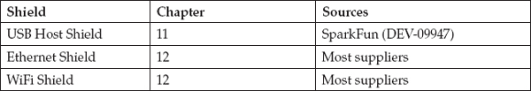
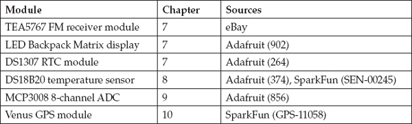
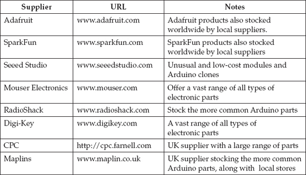

A
Parts
As this is a book essentially about programming, not many parts are referenced in this book. This appendix lists the parts that were used, however, and some possible suppliers.

Arduino Boards
Such is the popularity of Arduino that the common boards like the Uno and Leonardo are readily available. For the less common boards, take a look at Adafruit and SparkFun in the United States as well as CPC in the United Kingdom. Their websites are listed in the “Suppliers” section at the end of this appendix.
Shields
Adafruit and SparkFun both stock a wide range of the official Arduino shields as well as their own takes on some of the shields. You will also find interesting and low-cost shields and Arduino clones at Seeed Studio.
Shields referenced in the book are listed here. Product codes are in parentheses after the supplier names.

Components and Modules
Specific components and modules used as examples in the book are listed here. Product codes are in parentheses after the supplier names.

Suppliers
There are many suppliers of electronics and Arduino-related parts. A few are listed here:
